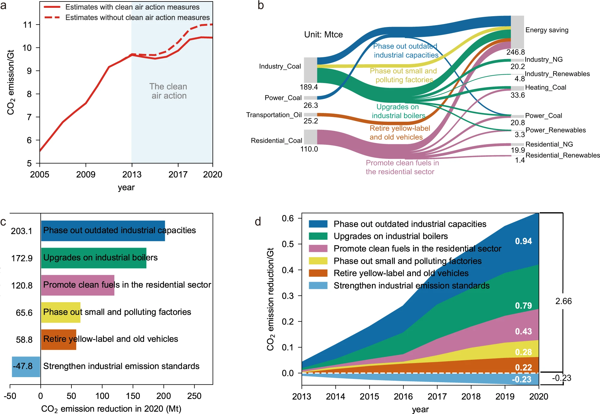

Background
Climate change mitigation measures can yield substantial air quality improvements while emerging clean air measures in developing countries can also lead to CO2 emission mitigation co-benefits by affecting the local energy system. To improve air quality, the Chinese government released the Air Pollution Prevention and Control Action Plan (the Action Plan) in 2013, aiming to achieve a notable decrease in the fine particulate (PM2.5) concentration in key regions by the end of 2017. It is followed by the Three-Year Action Plan for Winning the Blue Sky Defense Battle in 2018, the second phase of the Action Plan, that required further nationwide air quality improvements. However, how the different air pollution control measures in China’s two-phase clean air actions stimulated CO2 emission reduction remains unclear, and the contributions of China's Clean Air Action to the deceleration in the growth of China's CO2 emissions since 2013 have not been quantified.
Method
In this work, the CO2 emission reduction co-benefits of China’s clean air actions from 2013 to 2020 are quantified with the use of a modeling framework to assess the effectiveness of clean air measures on air quality improvements1. Based on a thorough review of China’s clean air actions, we summarize six measures activated or strengthened by China’s Clean Air Actions and distinguish the end-of-pipe measures with the other actions that alter the energy use efficiencies. Then, we carry out an ex-post assessment to quantify the impact of those energy-related measures on China’s energy end-use flow and CO2 emissions according to the real implementation rate of each measure collected by the government (unpublished data). CO2 emission reduction co-benefits of each measure were estimated by using the model of the Multi-resolution Emission Inventory of China (MEIC).
By reviewing national and regional policy packages, we summarized the five major clean air measures which may also lead to co-reductions on CO2 emissions, i.e., upgrades on industrial boilers, phasing out small and polluting factories, phasing out outdated industrial capacity, promoting clean fuels in the residential sector, and retiring yellow-label and old vehicles. We then estimated the changes of energy use and CO2 emissions induced by each measure (see Methods). As the end-of-pipe emission control measures may use additional energy and increase CO2 emissions, we also quantified the CO2 emission increase as the result of strengthening industrial emission standards.
Wrap-Up
According to our estimates, the implementation of China’s Clean Air Action successfully avoided 0.57 Gt anthropogenic CO2 emissions, which is 5.5% of the real-world emissions in 2020 (Fig. 1a). Figure 1b shows the energy end-use flows driven by five co-beneficial measures in 2020. Between 2013 and 2020, small, outdated combustion facilities were widely replaced by larger, cleaner, and more efficient infrastructures, which improved combustion efficiency and reduced energy use, especially coal use. As a result, the five co-beneficial measures provided a net energy savings of 0.25 giga tons coal equivalent (Gtce) in 2020 and accumulatively saved 1.06 Gtce energy between 2013 and 2020. We find that widespread phase-out and upgrades of outdated, polluting, and inefficient combustion facilities during clean air actions have promoted the transformation of the country’s energy system.
China’s clean air measures achieved a cumulative CO₂ reduction of 2.66 Gt between 2013 and 2020, and after accounting for a 0.23 Gt increase from end-of-pipe controls, the net reduction reached 2.43 Gt (about 3.1% of national emissions), exceeding the country’s total emission growth in the same period. The largest contributions came from phasing out outdated industrial capacities, upgrading boilers, promoting clean residential fuels, shutting down small polluting factories, and retiring old vehicles, with capacity phase-out and boiler upgrades being the most effective. Our study indicates that China’s efforts to tackle air pollution induce considerable climate benefit, and measures with remarkable CO2 reduction co-benefits deserve further attention in future policy design.

Fig 1. Change in China’s energy end-use flows and measure-specific contributions to CO2 emission reduction.